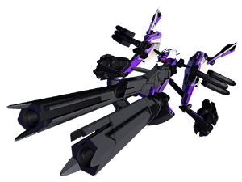
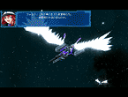
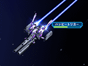
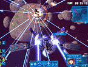

|
   |
|||
| ●特徴 |
| 紋章機４番機。重装多武装の大型紋章機。 ビーム砲、電磁砲、粒子砲、ミサイル、レーザー砲等の多数の装備を誇る紋章機。その装備ゆえに機動力は落ちるが、攻撃力はピカイチ。銃火器コレクションが趣味のフォルテそのものともいえる機体である。 パイロットの気力が充実していると、これらの装備を一気に放つことが可能になり、その標的はあっという間に蜂の巣になることだろう。通称「ストライクバースト」。 |
© BROCCOLI